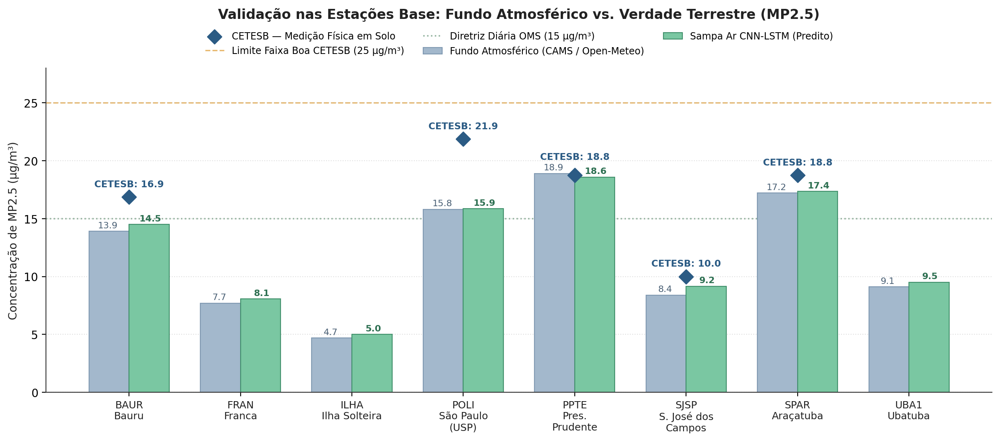
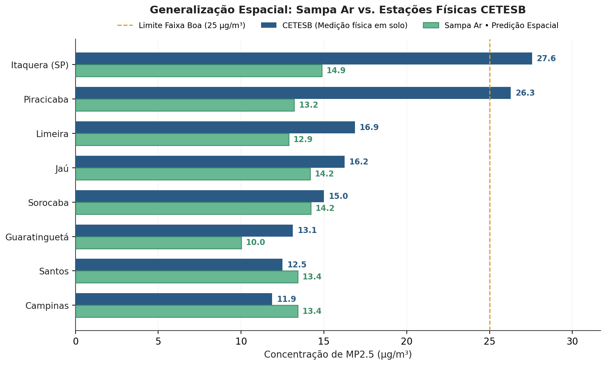

O Problema
Estações físico-químicas de qualidade do ar têm alto custo de implantação e manutenção, deixando a maior parte dos 645 municípios paulistas sem cobertura telemétrica contínua.
Uma solução de GeoAI que reaproveita a infraestrutura GNSS da RBMC/IBGE e redes neurais híbridas (CNN-LSTM) para cobrir os 645 municípios de São Paulo em tempo real.
Estações físico-químicas de qualidade do ar têm alto custo de implantação e manutenção, deixando a maior parte dos 645 municípios paulistas sem cobertura telemétrica contínua.
Reaproveitamento da infraestrutura geodésica existente da RBMC/IBGE (8 estações GNSS em SP) como sensor atmosférico complementar para estimar MP2,5 e MP10 em escala estadual.

Observáveis GNSS (SNR/ZTD), meteorologia (Open-Meteo), AOD e codificação cíclica horária (seno/cosseno).
Camada Conv1D (variações bruscas) + 2 camadas LSTM (inércia temporal) prevendo t+1.
Interpolação IDW (p = 2, k = 4) projetando as 8 estações para os 645 municípios do IBGE.
Pipeline CI/CD no GitHub Actions atualizando estacoes_pred.json e o mapa interativo a cada hora.

grafico1_validacao_8_estacoes.png for adicionado à pasta assets.

grafico5_expansao_espacial.png for adicionado à pasta assets.
Apoio preventivo na identificação de episódios de poluição atmosférica.
Reaproveitamento da rede geodésica aberta da RBMC/IBGE.
Cobertura informacional para os 645 municípios paulistas.